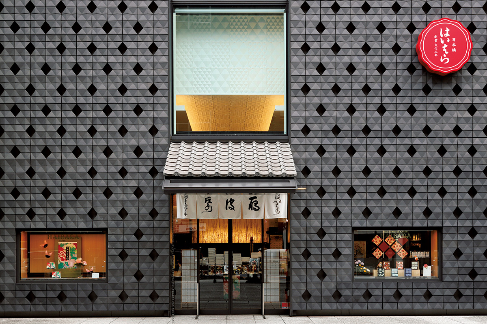
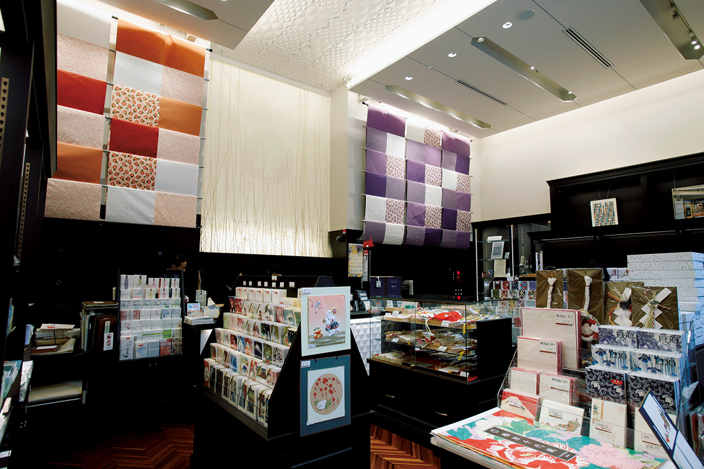
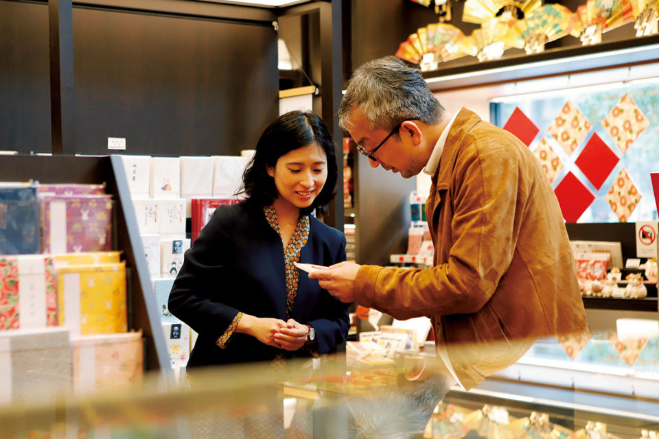
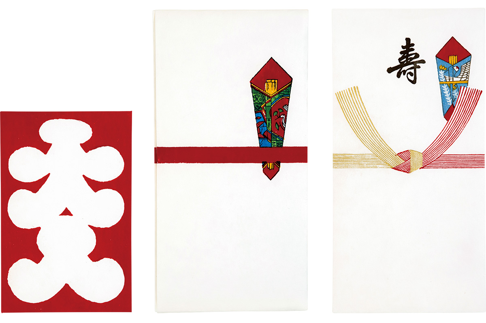

Токио · Нихонбаси · бумага васи
Haibara в Нихонбаси: лавка японской бумаги, которой больше двухсот лет

В Нихонбаси, на углу двух главных улиц, стоит чёрный куб с резным узором на стенах. Это Haibara, лавка бумаги васи, основанная в 1806 году. Здесь продают всё, ради чего хочется снова писать от руки.
Письма
Почему хочется писать от руки
Каждый Новый год в Японии приходят стопки поздравительных открыток. Директор одного токийского магазина-галереи, большой любитель хороших вещей и хороших лавок, получает их в основном от деловых партнёров и замечает грустную вещь: почти все открытки целиком напечатаны, и адрес, и текст. Поэтому каждая строчка, написанная рукой, радует особенно. Даже пара слов сразу напоминает лицо отправителя, и чувство как будто доходит само.
Всё для таких писем есть в Haibara. На углу проспектов Эйтай-дори и Тюо-дори стоит высотка «Токио Нихонбаси Тауэр», а у её подножия чёрное кубическое здание, стены которого покрыты рельефным узором. Это старая лавка бумаги: васи, узорная бумага тиёгами, бумага для писем, конверты для денежных подарков.
Лавку открыли в 1806 году. Славу в Эдо ей принесла бумага гамписи, которую делают из волокон кустарника гампи: кисть скользит по ней удивительно гладко. С тех пор больше двухсот лет Haibara хранит традицию и при этом всё время предлагает бумажные вещи, опережающие своё время.
Лавка
Бумага для писем, которую выбрала Кунико Мукода

Директору магазина больше всего дорога здешняя бумага для писем. Однажды ему нужно было написать письмо человеку старше себя, и он искал хорошую бумагу. Тогда ему случайно попалась книга Кунико Мукоды (1929–1981), сценаристки и писательницы, которую в Японии знают как человека с безупречным вкусом и умением жить. В числе любимых вещей она называла бумагу для писем Haibara. Простой рисунок без украшений показался ему благородным и красивым: неудивительно, что выбор Мукоды пал именно на неё.
В лавке глаза быстро разбегаются. Есть, например, переиздание «Нитидзёсэн», синей разлинованной бумаги в десять строк от Haibara: говорят, на ней писатель Кафу Нагаи (1879–1959) вёл свой знаменитый дневник «Дантётэй нитидзё», хронику жизни Токио за несколько десятилетий. Рядом открытки и бумага для коротких записок по рисункам Дзэсина Сибаты (1807–1891), мастера лаковой живописи, и Кёсая Каванабэ (1831–1889), художника с острой и насмешливой кистью. Оба считаются крупнейшими мастерами эпохи Мэйдзи, и открытки с их рисунками такие милые, что рука сама к ним тянется.

Ремесло
Конверты с ксилографией

Но сильнее всего директора магазина тронули конверты для денежных подарков, отпечатанные с деревянных досок. Украшение носи и шнуры мидзухики на них не напечатаны в типографии, а оттиснуты в несколько цветов с резных досок. У такой печати есть глубина, мягкость и неуловимое благородство, которых не даст обычная полиграфия. Мастера печатают каждый конверт вручную, и уже то, что такая работа и такие вещи до сих пор существуют, вызывает восхищение.
Удобство почты и мессенджеров в телефоне никто не отрицает, но многим кажется, что в них чего-то не хватает. С красивой бумагой Haibara в руках вспоминаешь, как важно вкладывать в послание вежливость и чувство. Есть то, что можно передать только через бумагу, и после такой лавки хочется кому-нибудь написать письмо.
Haibara
- Адрес
- Токио, Тюо, Нихонбаси, 2-7-1, «Токио Нихонбаси Тауэр»
- Телефон
- +81 3-3272-3801
- Часы работы
- 10:00–18:30, суббота и воскресенье 10:00–17:30
- Выходные
- праздничные дни, новогодние праздники
- Сайт
- haibara.co.jp
Фото: Маки Судзуки.